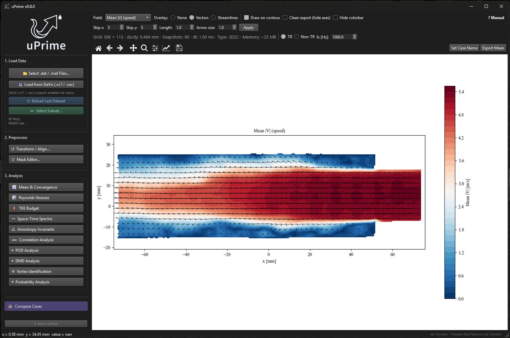

Software
Software and analysis tools developed alongside experimental research to make complex fluid-mechanics datasets easier to explore, understand, and reproduce.

uPrime
Open-source desktop application and Python package for post-processing PIV and CFD velocity fields. It covers turbulence statistics, spectra, POD/DMD, vortex identification, spatial correlations, anisotropy and probability analysis, for planar (2D2C) and stereo (2D3C) data, with no scripting needed.
Install with pip install uprime-piv.

LE-DM
Velocity reconstruction that knows where the body is. LE-DM takes scattered particle tracks together with the shape and motion of a rigid body, and returns a divergence-free velocity field on a fixed grid that stays physical right up to the moving surface.
Every grid point is sorted into open fluid, a thin shell at the body surface, or solid interior, and the three are solved together. The current release handles rigid spheres and ellipsoids, is pure Python, and includes a small synthetic test case. The code is published by the Transient Fluid Mechanics Laboratory.